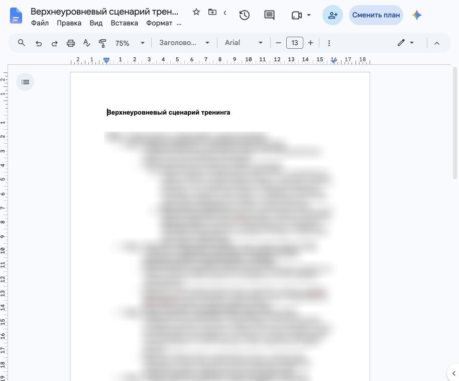
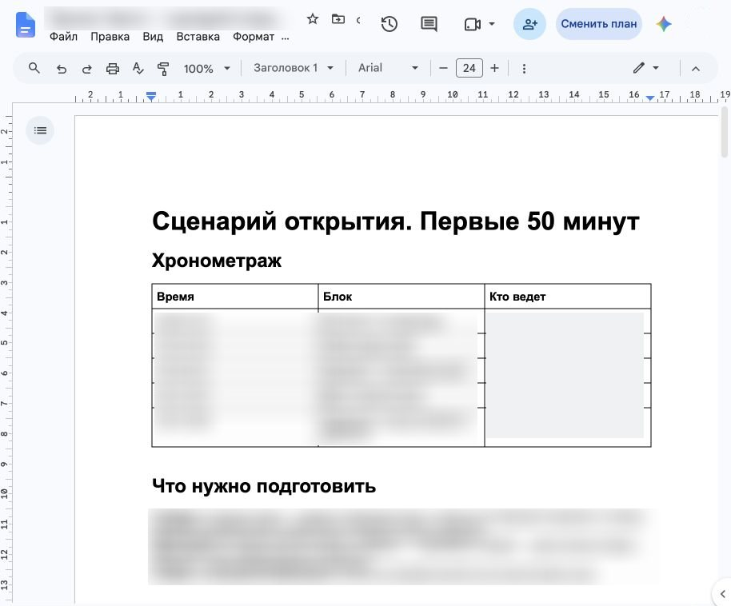
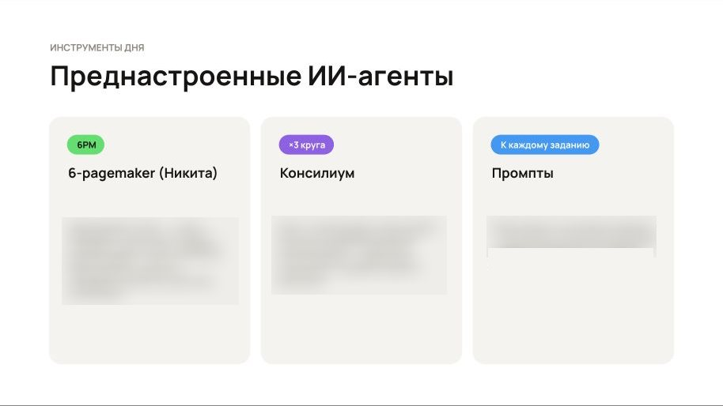
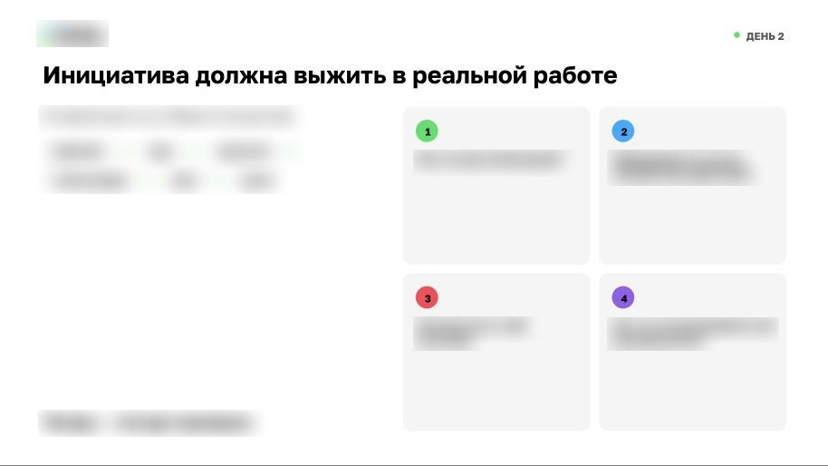
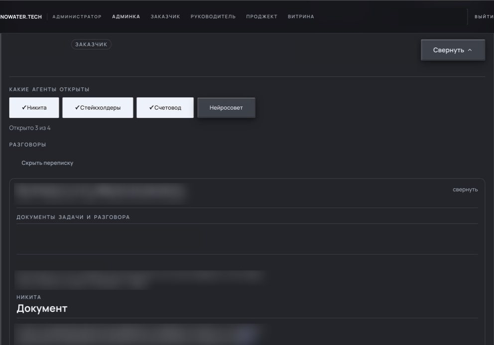
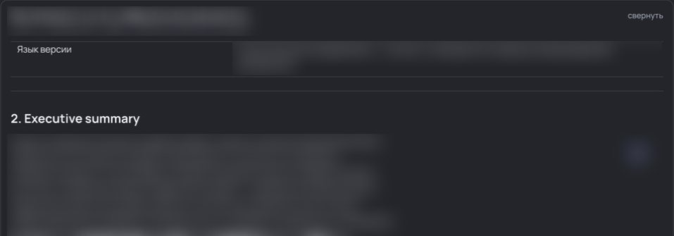
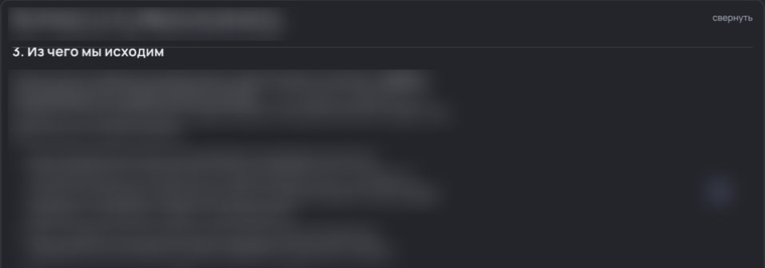
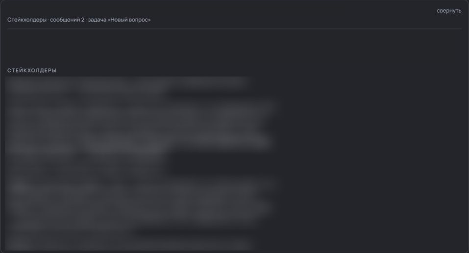
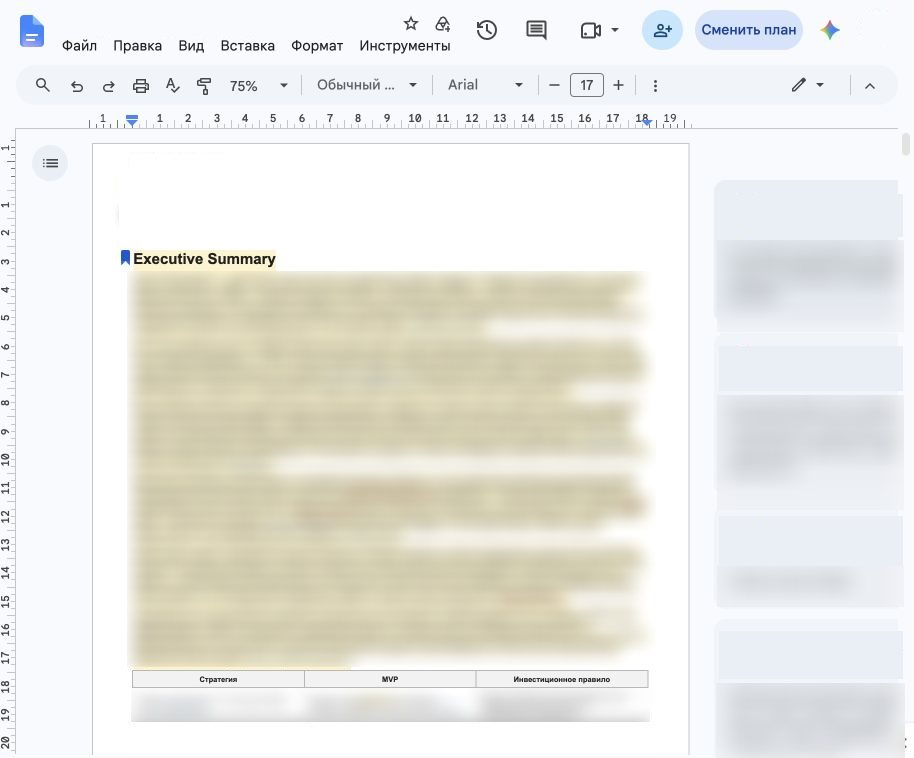

5 стратегических инициатив к защите за 2 дня вместо 30
В команде продаж согласование стратегических инициатив с топ-менеджментом проходит через формат 6-pager. На практике подготовка только первого драфта — того, который стейкхолдеры читают и комментируют, — затягивалась на 30+ дней.
С чем столкнулся бизнес:
Я выстроила решение вокруг реальной механики принятия решений в компании: ИИ-инструменты помогали структурировать инициативы и проверять аргументы по критериям топ-менеджмента.
Запросила согласованные ранее документы с комментариями руководства: какие аргументы убеждают стейкхолдеров, каких данных обычно не хватает и из-за чего инициативы возвращают на доработку
В интервью с заказчиком разобрали роли принимающих решения лиц, их требования к метрикам, зоны ответственности и последовательность согласований
На основе комментариев руководства собрала структуру документа и систему проверочных вопросов, отсекающих поверхностные гипотезы
Первая роль — сборка 6-pager из материалов команды, вторая — краш-тест аргументации: агенты задавали неудобные вопросы к экономике и ресурсам с позиций разных функций компании. Агентов собрала на платформе NOWATER.TECH
Работа строилась исключительно на «живом» материале: в первый же день команды переводили свои реальные инициативы в проектные решения
Работа началась с вопроса: «На какую метрику компании влияет предложение?» Показательный пример: 1 из команд планировала улучшать NPS и CSI, но не могла связать их с прибылью. Мы пересобрали логику: метрики лояльности принимаются к защите только при доказанной корреляции с доходами либо как гипотеза с конкретным ожидаемым экономическим эффектом. Это позволило участникам тренинга развивать умение мыслить категориями P&L
По согласованию с заказчиком 5 групп работали без руководителей своих направлений. Это исключило эффект «лидер придет и все объяснит» и показало реальную глубину понимания проблемы, цифр и рисков
В финале тренинга команды защищали документы перед руководителями направлений. Чтобы учесть максимум нюансов, команды прогрузили драфты документов в ИИ-агентов, настроенных под запросы реальных стейкхолдеров: агенты находили слабые места в ресурсах, экономике и взаимодействии со смежными отделами








5 команд за 2 дня подготовили 5 полноценных стратегических документов к защите перед управляющими партнерами
Сокращение срока подготовки драфта в 15 раз: с 30+ дней до 2 дней интенсивной работы — с методологической подготовкой и сопровождением.
Качество артефактов: по оценке заказчика и руководителей смежных стримов, документы вышли на уровень текущих корпоративных стандартов, а часть из них — превзошла их по глубине проработки.
Качественный сдвиг в бизнес-мышлении: команды перестали приносить «списки задач» и начали разговаривать на языке топ-менеджмента:
Примечание: метрика фиксирует путь от идеи до готового драфта к предварительной читке; регламентные сроки последующего утверждения в расчет не входят.

Наличие ИИ-инструментов само по себе не повышает качество решений. Практически вся команда уже пользовалась последними моделями GPT и Claude — проблему сырых документов это не решало. Командам требовалась методология подготовки и обоснования стратегических инициатив.
Ключевые выводы: